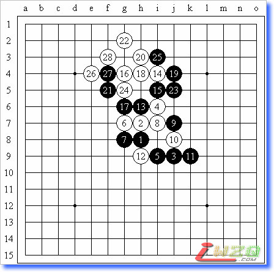
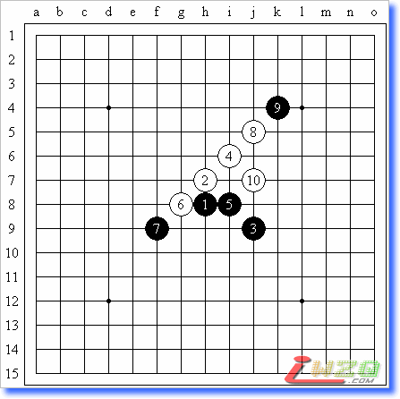
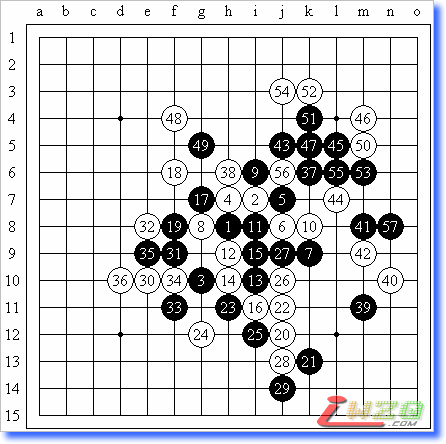

第三届北京高校五子棋精英赛自战棋评
#1 第三届北京高校五子棋精英赛自战棋评 作者：有志青年 发表时间：2008-2-4 21:41:49
图1：实战谱
田丰 - 张珵（交换后）白胜

来讲讲这次精英赛我觉得最有意思的一盘棋(图1)。倒数第二轮时，我对田丰，我开局。田丰很强的，在和我遇之前也只输了一场，因此绝对不可以大意。正当我和高辰都在发愁该开什么局时，吴言来了，他说他刚学棋的时候和田丰在中心下过一盘新月，结果持白胜。我一听，便来了兴趣，问他那盘是怎么走的。结果吴言摆出了图2的局面。显然黑5走错了，这个5是必败的。于是我便决定就给他开新月走这个4，看看他现在会不会走了:)
图2：错误的黑5

实战时黑两打走对了，拿掉7位的一打，一路行棋到10，他想了一会，走了这个11。和谱的11相比，这个11要弱不少。12防守之后黑棋已经没了先手，必须回来防守。看到这个13后，我忽然觉得这个局面好像似曾相识，于是便开始想在哪见过这个局面。我想啊想，想啊想，想啊想啊想啊想…………………………竟然想起来了！这是浙江赛上陈新持白胜魏佳星的那盘！于是我便仿照陈新的走法，下出了14和16。走出这个16后，上边基本上就已经是白棋的天下了。实战的17和魏佳星的17不同，因此我必须找到新的杀法。长考之后，我走出了活三后一子通2.5路的这个强攻的22，之后白就在上面杀了。哈哈，太爽了~ 签字之后，他好像很郁闷，一句话也没说就走了。我出门之后，和在门口观战的高辰击掌庆祝胜利（真是哥们啊，这次比赛没能在实战中和你碰上真觉得有点遗憾呢~）。
后来回到休息室，听段然说了一个非常可怕的消息：他们昨天才刚刚拆了这个变化！天哪，太可怕了！差点就撞枪口上了。呵呵，这是大难不死，必有后福吧……
吴承昊－张珵（交换后）黑胜

来讲讲这次精英赛我输的这盘。这是第三轮，我对北大的吴承昊，我开局。由于我已经把去年11月高校赛前40名的名字打印出来了，看到他的名字在上面时，便知道这盘棋将不会向前两盘那样轻松结束了。我按照赛前准备的那样开出了名月并且走了这个8的变化，他陷入长考，走出了正确的9，但他的11却走得有点弱了，之后双方正常走到29。30是模仿云飞棋风下出的棋(:P)感觉满强的。这时候裁判给双方加表了，每方10分钟包干，超时判负。他想了想，觉得没什么东西，就通过33、35的活三把局面交换干净。但此时我却做了个极不明智的决定。36？真不知道我当时是怎么想的，竟然档在了下边！莫非是想把局面走得激烈点？到现在我都想不明白……在时间不多的时候这样做可是非常危险的。果然37是连接的好棋，黑棋发动了联系全盘的总攻！但黑棋后面攻得也并非无懈可击，比如51活三后白棋只要挡在下面就没事了（确切地说是白胜了~），但在时间的压迫下我的52、54连续出现失误，最终断送了好局。唉，可惜的一盘。我签字之后，他面带笑容地问我：“你就是贴吧上的oddgod吧？”我无语……
#2 Re:第三届北京高校五子棋精英赛自战棋评 作者：百医天使 发表时间：2008-3-2 12:01:39
呵呵，变化真不少